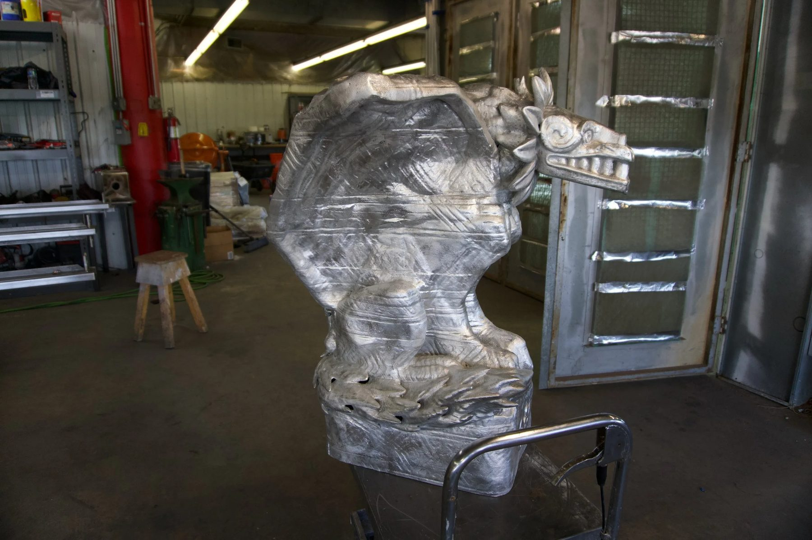
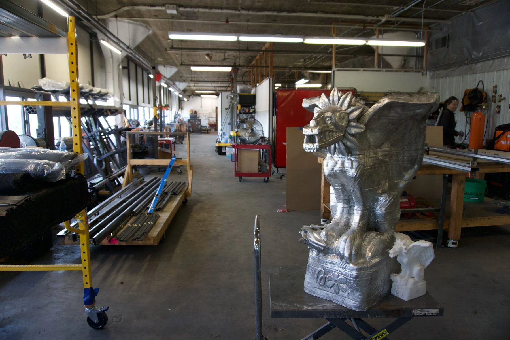
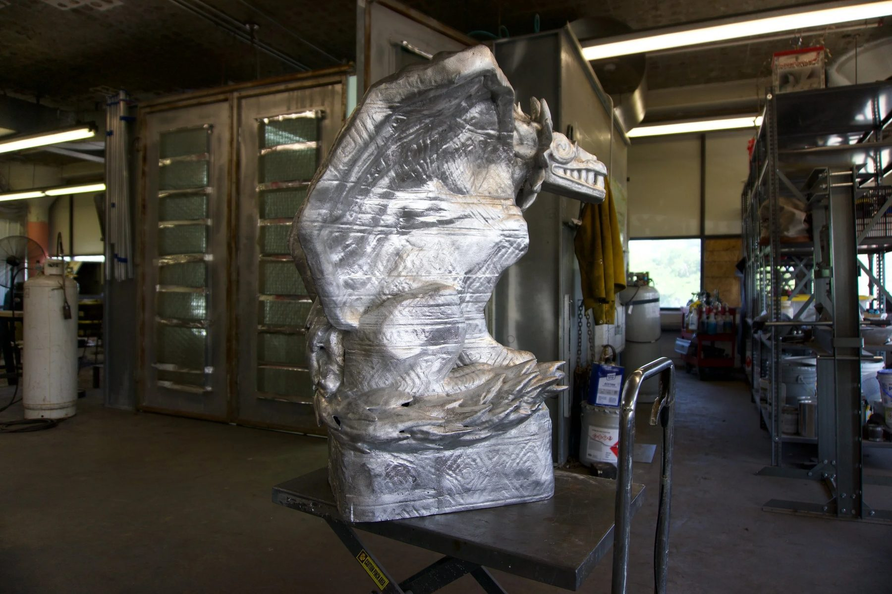
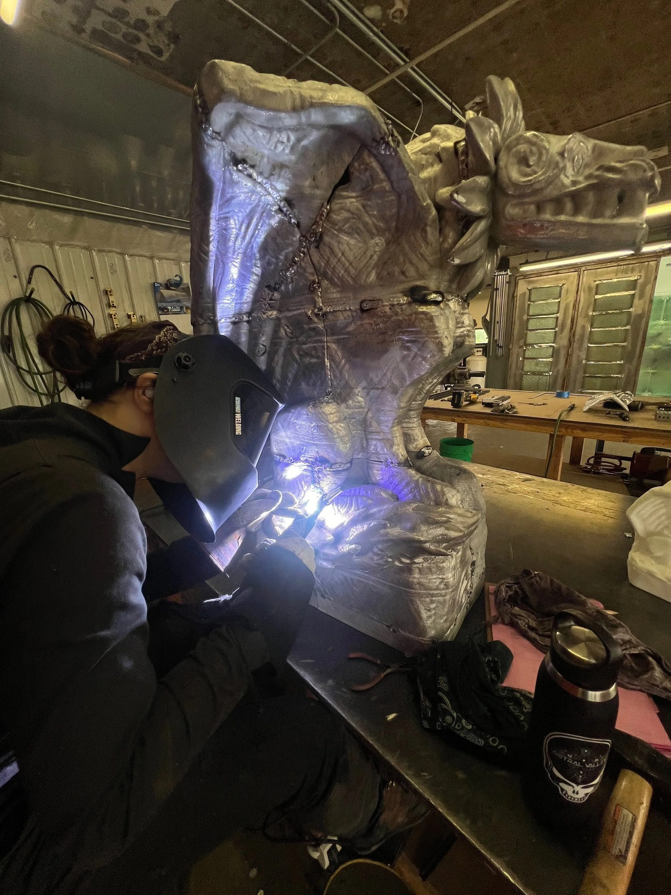
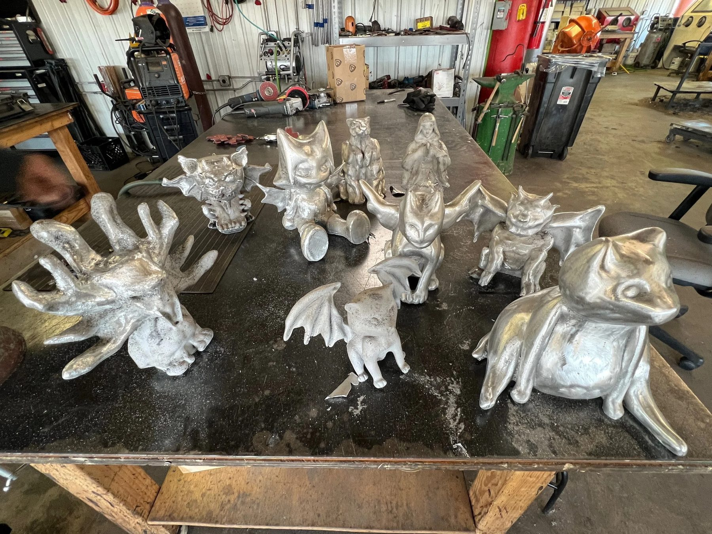
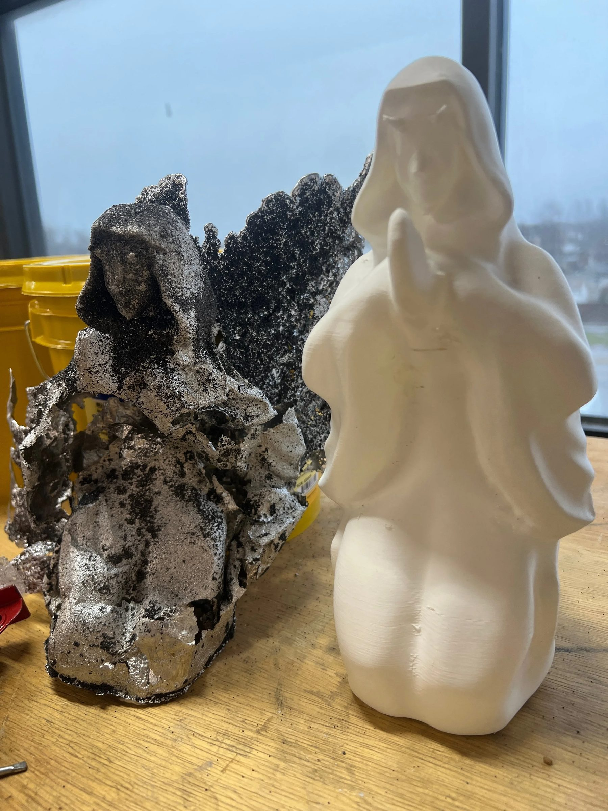
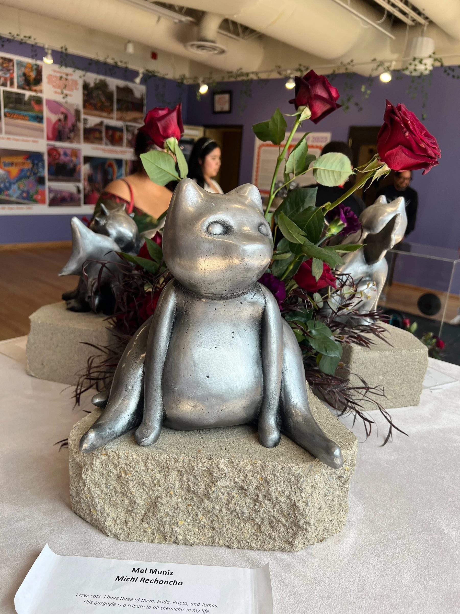
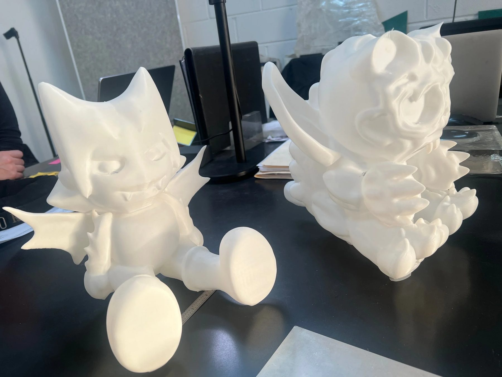
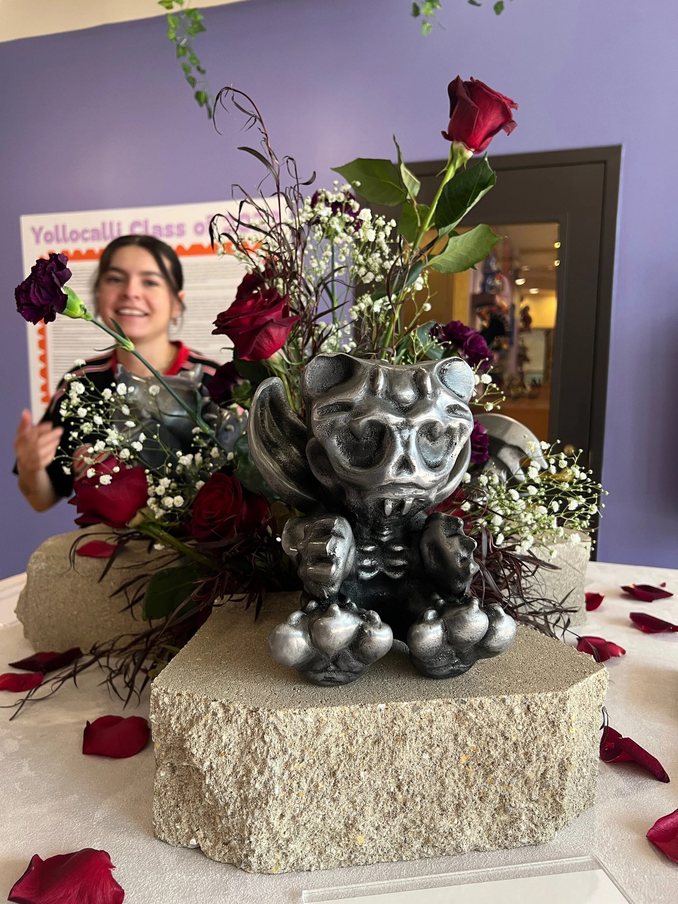
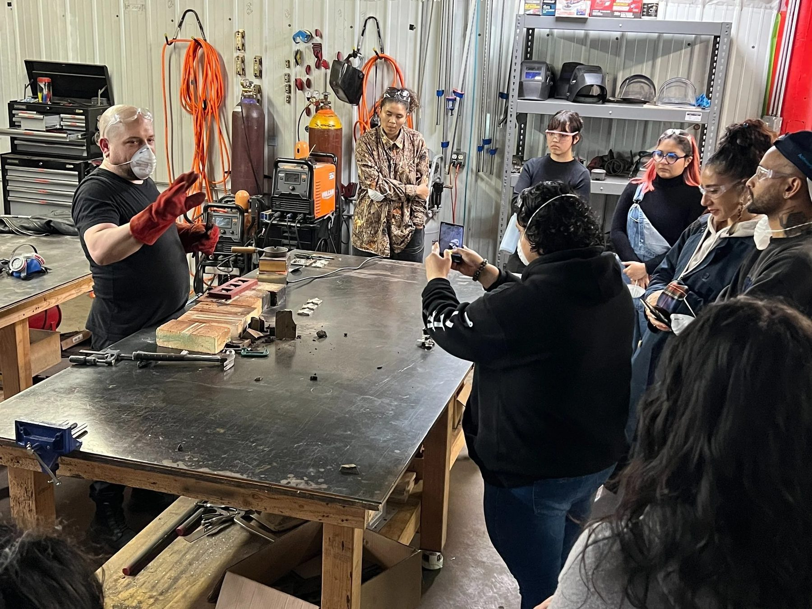

Public Art / 2024
Jardin de Gargolas
YolloCalli Arts Reach
Student designed garden gargoyles taken from 3D model to cast aluminum sculpture.
In collaboration with YolloCalli Arts Reach and artist educator Secret of Manna, we helped bring students' 3D digital garden gargoyle designs into the physical world.
Starting in fall 2023, students conceptualized their creations in design software. By spring the project had become a fabrication and exhibition class. We printed the sculptures in house and prepared them for casting.
The 3D printed sculptures became the positive for a resin sand mold system, a lost PLA process that gives a direct translation between the digital design and its metal duplicate.
Once cast, the gargoyle pieces were welded together and finished with a dark patina.
Details
- Year
2024 - Location
Chicago, IL - Category
Public Art - Materials
Cast aluminum, dark patina
Credits
- YolloCalli Arts Reach
- Artist educator: Secret of Manna
Index









